Class 4.2 - Python 数据可视化基础¶
1. plotnine 包语法预览¶
plotnine 这个包作图的基本理念与 ggplot2 完全一样，都是图层的叠加，我们可以通过添加不同的图层来构建出我们想要的图形：
- 我们来看一段典型的
plotnine代码：
(
ggplot(data=data) +
geom_point(aes(x="X", y="Y", color="factor")) +
geom_smooth(aes(x="X", y="Y"), method="lm") +
labs(x="Height", y="Weight", title="Height vs Weight")
)
- 通过这段代码，大家可以看出来，
plotnine的代码结构和ggplot2非常相似，而且都是基于图层叠加的逻辑来编写和运行的
本次课我们使用 beer 数据来展示数据可视化的基本功能
beer数据是一个关于啤酒销售的数据集，其中包含了不同类型的啤酒在不同时间段的销售情况- 我们首先调用一下本次课要用到的包，再加载一下
beer数据：
ggplot2 (R) vs plotnine (Python) 的区别 - 常用包对照表：
R 包 Python 等价 说明 ggplot2（含在tidyverse中）plotnine核心绘图包 patchworkplotnine自带的\|和/操作符多图组合 scalesmizani坐标轴格式化（plotnine 内置使用） ggokabeito手动定义颜色列表 Okabe-Ito 色盲友好调色板
import pandas as pd
from plotnine import *
# Okabe-Ito 调色板（等价于 R 中的 ggokabeito 包）
# 这是一个色盲友好的调色板，也是本课程的默认调色板
OKABE_ITO = [
"#E69F00", # 橙色
"#56B4E9", # 天蓝色
"#009E73", # 绿色
"#F0E442", # 黄色
"#0072B2", # 深蓝色
"#D55E00", # 红橙色
"#CC79A7", # 粉紫色
"#000000", # 黑色
]
beer = pd.read_csv("../data/beer.csv")
beer.head()
| store | week | brand | upc | qty | price | sales_indicator | city | price_tier | zone | zip | address | latitude | longtitude | start_of_week | is_holiday_week | imported | |
|---|---|---|---|---|---|---|---|---|---|---|---|---|---|---|---|---|---|
| 0 | 86 | 91 | Budweiser | 1820000016 | 23 | 3.49 | False | Chicago | medium | 2 | 60618 | 3350 Western Ave | 41.942353 | -87.68999 | 1991-06-06 | False | domestic |
| 1 | 86 | 91 | Corona | 8066095605 | 13 | 5.79 | False | Chicago | medium | 2 | 60618 | 3350 Western Ave | 41.942353 | -87.68999 | 1991-06-06 | False | imported |
| 2 | 86 | 91 | Lowenbrau | 3410021505 | 13 | 3.99 | False | Chicago | medium | 2 | 60618 | 3350 Western Ave | 41.942353 | -87.68999 | 1991-06-06 | False | imported |
| 3 | 86 | 91 | Miller | 3410000554 | 15 | 3.69 | False | Chicago | medium | 2 | 60618 | 3350 Western Ave | 41.942353 | -87.68999 | 1991-06-06 | False | domestic |
| 4 | 86 | 92 | Budweiser | 1820000016 | 46 | 3.49 | False | Chicago | medium | 2 | 60618 | 3350 Western Ave | 41.942353 | -87.68999 | 1991-06-13 | False | domestic |
我们先使用 plotnine 中的 ggplot 函数，将 beer 数据传入，看下效果：
(ggplot(beer))
- 运行这段代码后，我们会得到一个空白的图形，那是因为
ggplot(beer)这一行代码只创建了第一个图层，也就是数据层 - 但是我们还没有添加任何几何层来展示数据的结构和特征，所以我们看到的只是一个空白的图形
- 接下来，我们就在这个基础上添加一些几何层来展示数据的结构和特征了
2. plotnine 包绘制常见图形类型¶
(1) 绘制箱形图 (Boxplot)¶
首先，我们来绘制第一个图形，就是箱形图
- 我们想使用箱形图来展示价格分布，就可以在
ggplot(beer)的基础上再加一个geom_boxplot图层：
(
ggplot(beer) +
geom_boxplot(aes(y="price"))
)
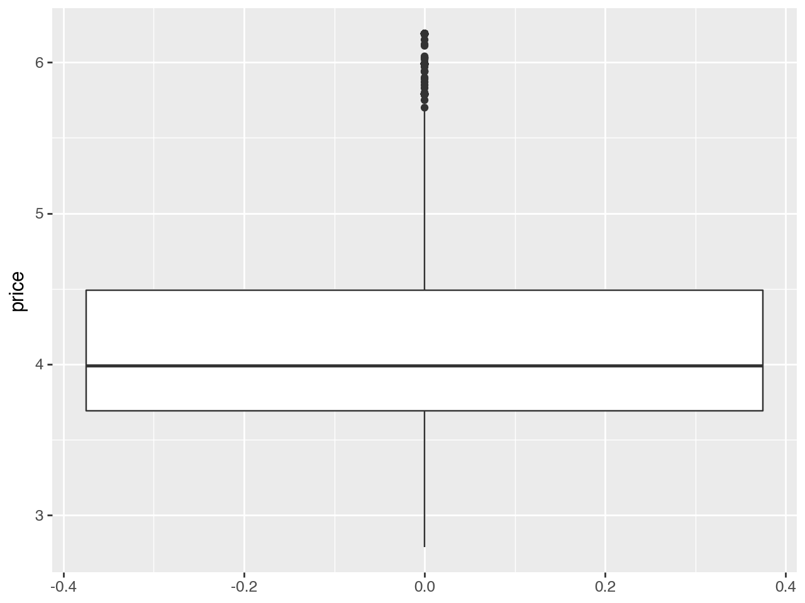
-
在这段代码中：
ggplot(beer)创建了数据层，告诉plotnine我们要使用beer数据来绘图geom_boxplot(aes(y="price"))添加了一个箱形图的几何层，告诉plotnine我们要绘制价格的箱形图aes函数用来指定映射关系，在这里我们把价格映射到 y 轴上，这样我们就可以看到价格的分布情况了
-
注意，这里我们不用使用
beer["price"]来指定价格列，因为在plotnine中，数据已经被传入了，所以我们直接使用列名（字符串形式）就可以了
接下来，我们来加入一个维度，分别展示进口和非进口啤酒的价格分布：
(
ggplot(beer) +
geom_boxplot(aes(y="price", x="imported"))
)
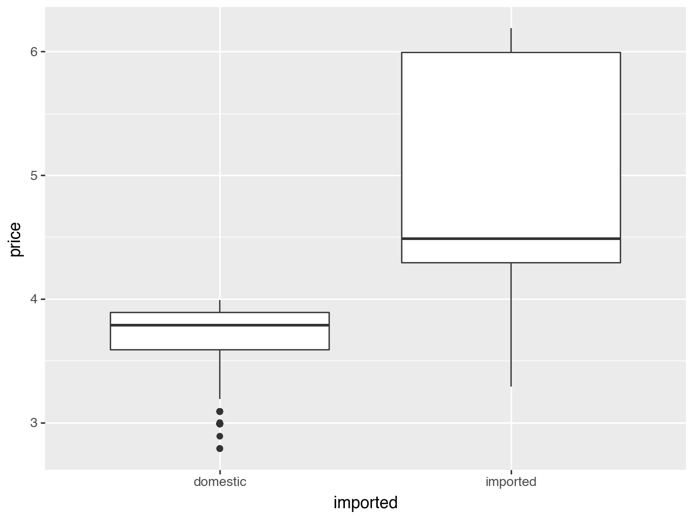
- 这里我们在
aes函数中加入了x="imported"，这样我们就可以通过 x 轴来区分进口和非进口啤酒的价格分布了 - 运行这段代码后，我们就可以看到两个箱形图，一个是进口啤酒的价格分布，另一个是非进口啤酒的价格分布了
这里我们可以看出来，aes 函数中：
y参数指定了图像的 y 轴数据怎样延伸，这里我们把价格填入到 y 轴上，这样我们就可以看到价格的分布情况了x参数指定了图像的 x 轴怎样延伸，这里我们是通过imported这个变量来区分进口和非进口啤酒的价格分布的- 通过这种方式，我们就可以非常灵活地控制图像的结构和特征了
- 我们不妨试试把
y和x参数交换一下位置，看看会发生什么：
(
ggplot(beer) +
geom_boxplot(aes(y="imported", x="price"))
)
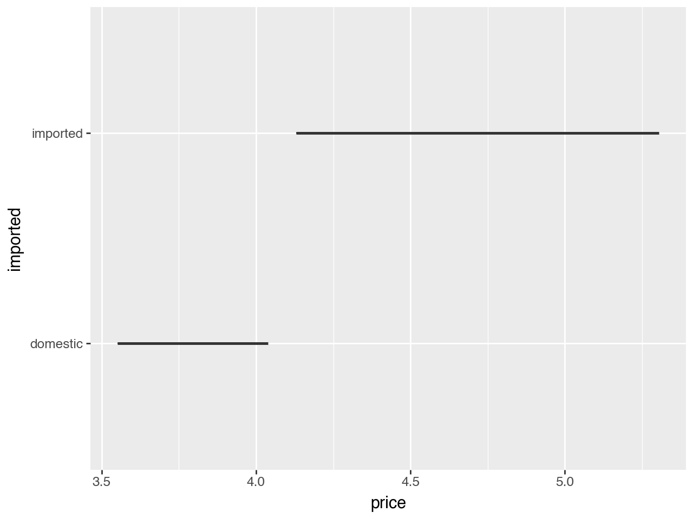
- 可以看到，这个时候就会变成一个横向的箱形图了
- 因此，
aes函数中的x就决定了图像的 x 轴数据怎样延伸，y就决定了图像的 y 轴数据怎样延伸，通过交换它们的位置，我们就可以得到不同方向的箱形图了
我们再来看一个例子，我们展示不同品牌啤酒的价格分布：
(
ggplot(beer) +
geom_boxplot(aes(y="price", x="brand"))
)
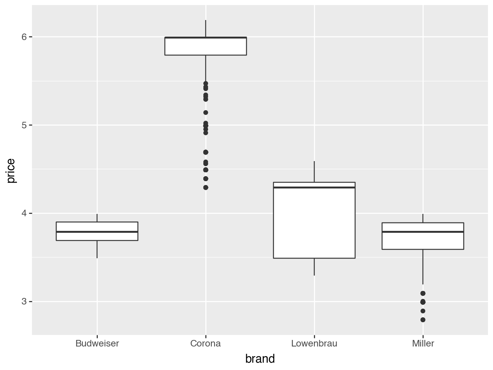
箱形图的解读：
-
箱形图中要素的含义：
- 箱体上界：第三个四分位数（Q3: 75%分位数）
- 箱体中线：中位数（Q2: 50%分位数）
- 箱体下界：第一个四分位数（Q1: 25%分位数）
- 上须线：上界 + 1.5 * 四分位距（IQR: Q3 - Q1）范围内的最大值：根据数据动态调整
- 下须线：下界 - 1.5 * 四分位距（IQR: Q3 - Q1）范围内的最小值：根据数据动态调整
- 箱体之外的点：异常值（outliers）
-
例如，我们有这样一组排好序的数据：
20, 55, 58, 60, 62, 65, 68, 70, 72, 90，一共有 10 个数，R 和plotnine计算分位数时使用的方法是：第 p 分位数的位置是1 + (n - 1) × p，如果这个位置不是整数，就在相邻的两个数之间按比例计算- Q1 = 58.5：25% 分位数的位置是 1 + (10 - 1) × 25% = 3.25，也就是在第 3 个数（58）和第 4 个数（60）之间，从第 3 个数出发，往第 4 个数走 0.25 的距离，所以 Q1 就是 58 + 0.25 × (60 - 58) = 58.5
- Q2 = 63.5：50% 分位数的位置是 1 + (10 - 1) × 50% = 5.5，也就是第 5 个数和第 6 个数的正中间，所以 Q2 就是 (62 + 65) / 2 = 63.5
- Q3 = 69.5：75% 分位数的位置是 1 + (10 - 1) × 75% = 7.75，也就是在第 7 个数（68）和第 8 个数（70）之间，从第 7 个数出发，往第 8 个数走 0.75 的距离，所以 Q3 就是 68 + 0.75 × (70 - 68) = 69.5
- IQR = Q3 - Q1 = 69.5 - 58.5 = 11
- 上须线的范围：Q3 + 1.5 * IQR = 69.5 + 1.5 * 11 = 86：但是数据中没有86，因此就往下找，找到的第一个小于86的数是72，所以上须线的范围就是72了
- 下须线的范围：Q1 - 1.5 * IQR = 58.5 - 1.5 * 11 = 42：但是数据中没有42，因此就往上找，找到的第一个大于42的数是55，所以下须线的范围就是55了
- 因此，异常值有两个：20和90，因为它们分别小于下须线的范围55和大于上须线的范围72了
-
根据箱形图，我们可以大致看出数据的分布情况：
- 如果下须线比上须线长，且箱体中位数偏上，那么数据可能是左偏的（Negatively skewed）
- 如果上须线比下须线长，且箱体中位数偏下，那么数据可能是右偏的（Positively skewed）
- 如果上下须线长度差不多，且箱体中位数在中间，那么数据可能是对称分布的（Symmetric）
(2) 绘制直方图 (Histogram)¶
直方图展示的是数据的分布情况，使用的函数是 geom_histogram：
- 例如，我们想展示每周销量的分布情况，其中可以使用
aes(x="qty")来指定销量列作为 x 轴数据 aes函数基本不需要指定 y 轴数据，因为直方图的 y 轴默认就是频数或者密度了，所以我们只需要指定 x 轴数据就可以了
(
ggplot(beer) +
geom_histogram(aes(x="qty"))
)
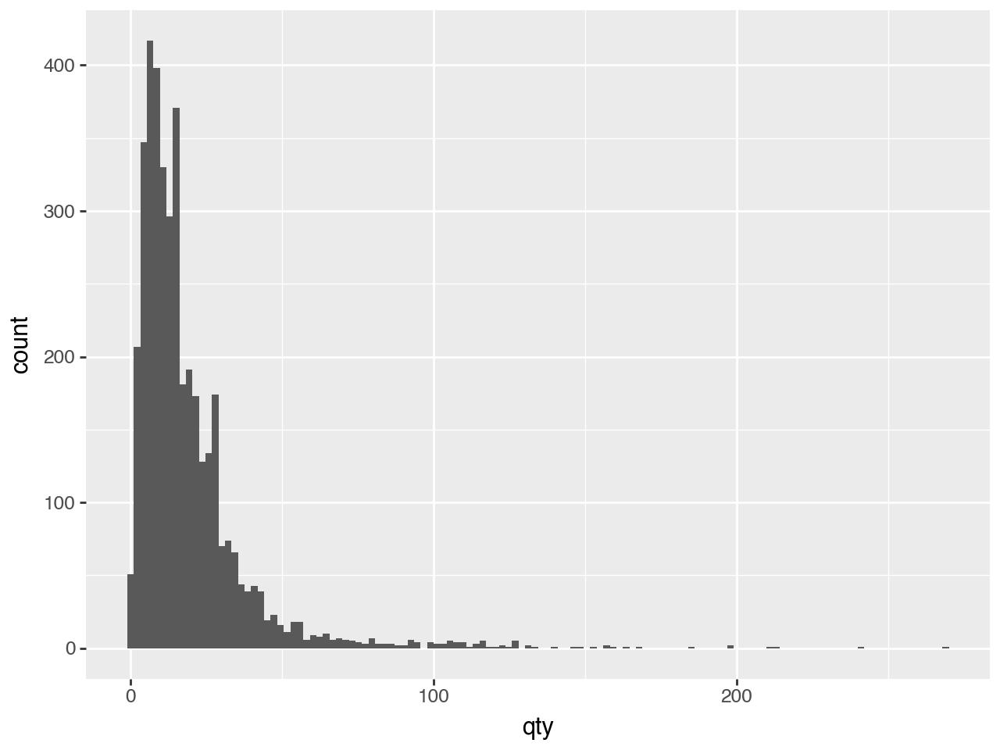
在 geom_histogram 函数中，我们可以使用两种方式来控制直方图的显示效果：
bins参数：这个参数用来指定直方图的箱数，也就是我们把数据分成多少个区间来展示，如果不指定，plotnine会根据数据自动计算一个箱数（R 中的ggplot2默认是 30 个箱子），并提醒我们最好自己指定binwidth-
binwidth参数：这个参数用来指定每个箱子的宽度，也就是我们把数据分成多宽的区间来展示，默认是根据数据的范围和箱数自动计算的 -
我们来对比一下这两种方式的效果：
(
ggplot(beer) +
geom_histogram(aes(x="qty"), bins=20)
)
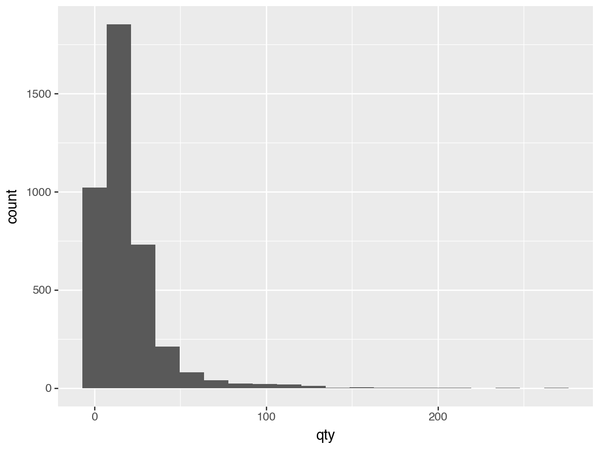
(
ggplot(beer) +
geom_histogram(aes(x="qty"), binwidth=10)
)
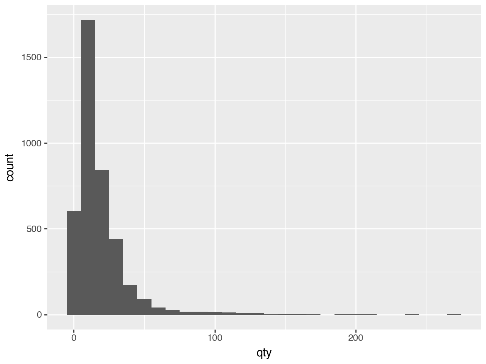
除了指定箱数和箱宽之外，我们还可以通过 fill 参数来指定是否按照某列来将箱体改为堆叠式箱体：
- 例如，我们可以使用
aes(fill="imported")来指定按照进口和非进口啤酒来区分不同颜色的箱体，注意fill参数是aes函数中的一个参数 - 这样我们就可以看到进口和非进口啤酒的销量分布情况了
(
ggplot(beer) +
geom_histogram(aes(x="qty", fill="imported"), binwidth=10)
)
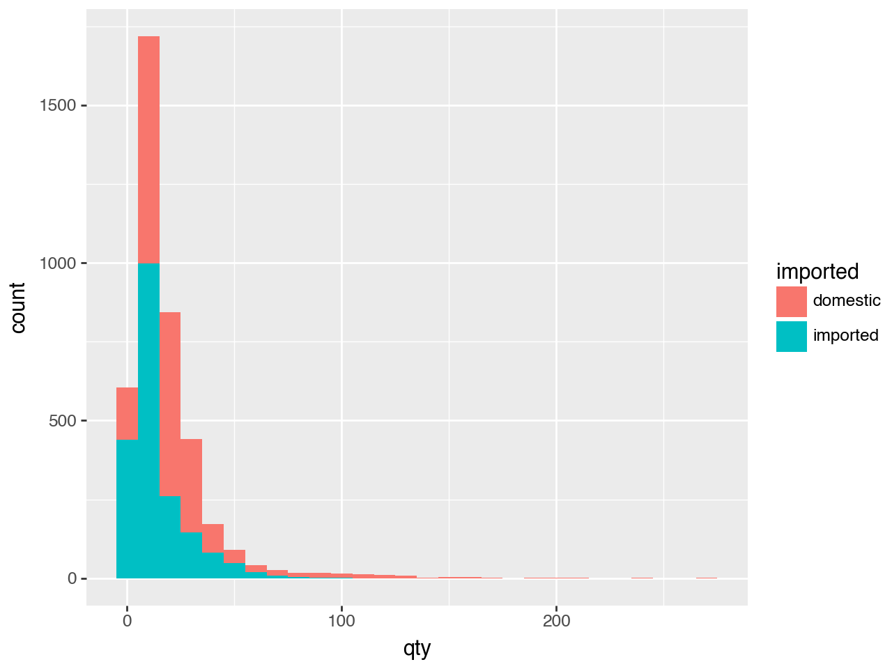
- 这个结果表示的含义是，每个箱体我都分为两部分，一部分是进口啤酒的销量分布，另一部分是非进口啤酒的销量分布
- 比方说第一个箱体的区间是 0-10，那么这个箱体的下半部分表示非进口啤酒的销量在 0-10 这个区间内的频数，而上半部分表示进口啤酒的销量在 0-10 这个区间内的频数
(3) 绘制密度图 (Density Plot)¶
密度图可以理解为直方图的变体，它是将直方图有棱角的箱体变成了平滑的曲线，使用的函数是 geom_density：
(
ggplot(beer) +
geom_density(aes(x="qty"))
)
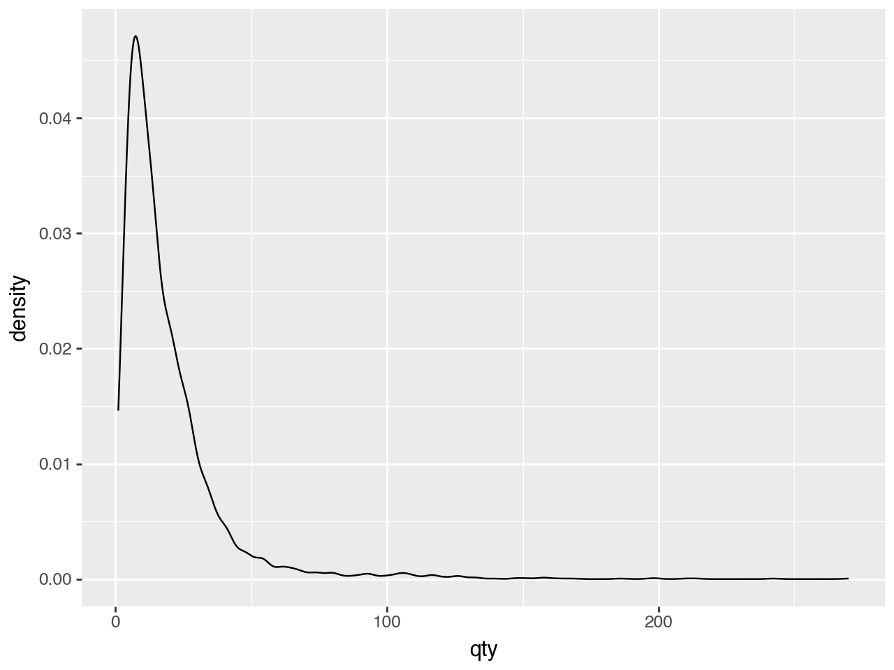
直方图和密度图都是展示数据分布的图形类型，区别在于：
- 直方图可以准确表示出每个区间内的频数或者密度，但是箱体不连续导致对数据分布的整体趋势不够直观
- 密度图则是通过平滑曲线来近似表示数据的分布情况，虽然会丢失一些细节东西，但这样表示更直观一些
当然，密度图也可以通过 aes(fill="imported") 来区分进口和非进口啤酒的密度曲线了，这样我们就可以看到不同类型啤酒的销量分布情况了
(
ggplot(beer) +
geom_density(aes(x="qty", fill="imported"))
)
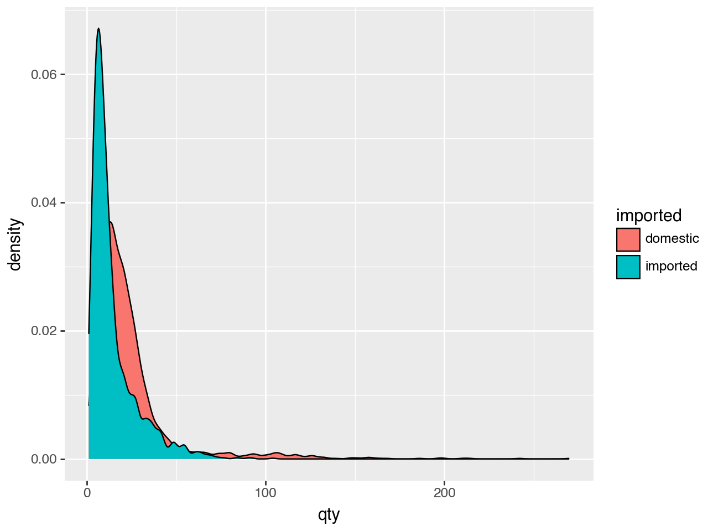
(4) 绘制散点图 (Scatter Plot)¶
散点图展示的是两个连续变量之间的关系，使用的函数是 geom_point：
- 在
geom_point函数中，我们可以使用aes(x="X", y="Y")，这时的x和y都必须是数值型的连续变量，这样我们才能在散点图中展示它们之间的关系了 - 除此之外我们还可以使用
color参数来指定按照某列来区分不同颜色的点，例如我们可以使用aes(color="imported")来指定按照进口和非进口啤酒来区分不同颜色的点了 -
这里我们简单区分一下
color和fill这两个参数：color参数用来指定点的边框颜色fill参数用来指定点的填充颜色- 这里我们使用
color而不使用fill是因为散点图中的点是没有填充颜色的，整个点全是边框
ggplot2 (R) vs plotnine (Python) 的区别 - 颜色调色板： - R：
scale_color_okabe_ito()来自ggokabeito包 - Python：plotnine没有内置的 Okabe-Ito 调色板，需要使用scale_color_manual(values=OKABE_ITO)手动指定颜色列表（我们在文件开头已经定义好了OKABE_ITO）
(
ggplot(beer) +
geom_point(aes(y="price", x="qty", color="imported")) +
scale_color_manual(values=OKABE_ITO) # R: scale_color_okabe_ito()
)
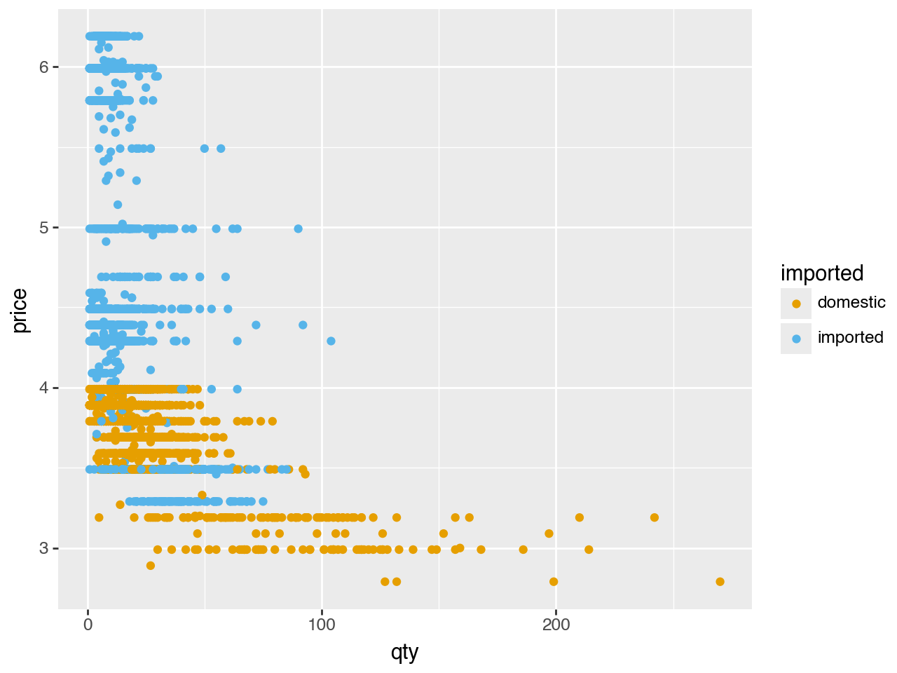
在散点图中，经常与散点一起绘制的还有平滑曲线，我们可以使用 geom_smooth 函数来添加平滑曲线：
- 首先，
geom_smooth中我们要使用aes(x="X", y="Y")来指定 x 轴和 y 轴的数据来源，这个基本上是与geom_point中的aes函数是一样的 -
接着，在
geom_smooth函数中，我们还可以添加以下参数：method参数：这个参数用来指定平滑曲线的拟合方法，常用的有"lm"（线性模型）、"loess"（局部回归）等，默认是"auto"（由 plotnine 根据数据量自动选择拟合方法）se参数：这个参数用来指定是否显示平滑曲线的置信区间，默认是True，表示显示置信区间，如果设置为False，则不显示置信区间color参数：这个参数用来指定平滑曲线的颜色
ggplot2 (R) vs plotnine (Python) 的区别 - 调色板取色： - R：
palette_okabe_ito()[7]取 Okabe-Ito 调色板的第 7 个颜色 - Python：直接用OKABE_ITO[6]（Python 索引从 0 开始，所以第 7 个颜色是索引 6）
!pip install scikit-misc
Collecting scikit-misc
Downloading scikit_misc-0.5.2-cp311-cp311-macosx_11_0_arm64.whl.metadata (5.0 kB)
Requirement already satisfied: numpy>=1.26.4 in /opt/anaconda3/envs/pydata/lib/python3.11/site-packages (from scikit-misc) (2.4.4)
Downloading scikit_misc-0.5.2-cp311-cp311-macosx_11_0_arm64.whl (151 kB)
Installing collected packages: scikit-misc
Successfully installed scikit-misc-0.5.2
(
ggplot(beer) +
geom_point(
aes(y="price", x="qty", color="imported"),
alpha=0.25
) +
geom_smooth(
aes(y="price", x="qty"),
method="lm",
color=OKABE_ITO[6], # R: palette_okabe_ito()[7]（R 索引从 1 开始）
se=True
) +
geom_smooth(
aes(y="price", x="qty"),
method="loess",
color=OKABE_ITO[4], # R: palette_okabe_ito()[5]
se=True
)
)

事实上，当我们的多个图层都要使用相同的 aes 映射时，我们可以把这个 aes 映射放在 ggplot 函数中，这样就不需要在每个图层中重复指定了：
(
ggplot(beer, aes(y="price", x="qty", color="imported")) +
geom_point(alpha=0.25) +
geom_smooth(
method="lm",
color=OKABE_ITO[6],
se=True
) +
geom_smooth(
method="loess",
color=OKABE_ITO[4],
se=True
)
)
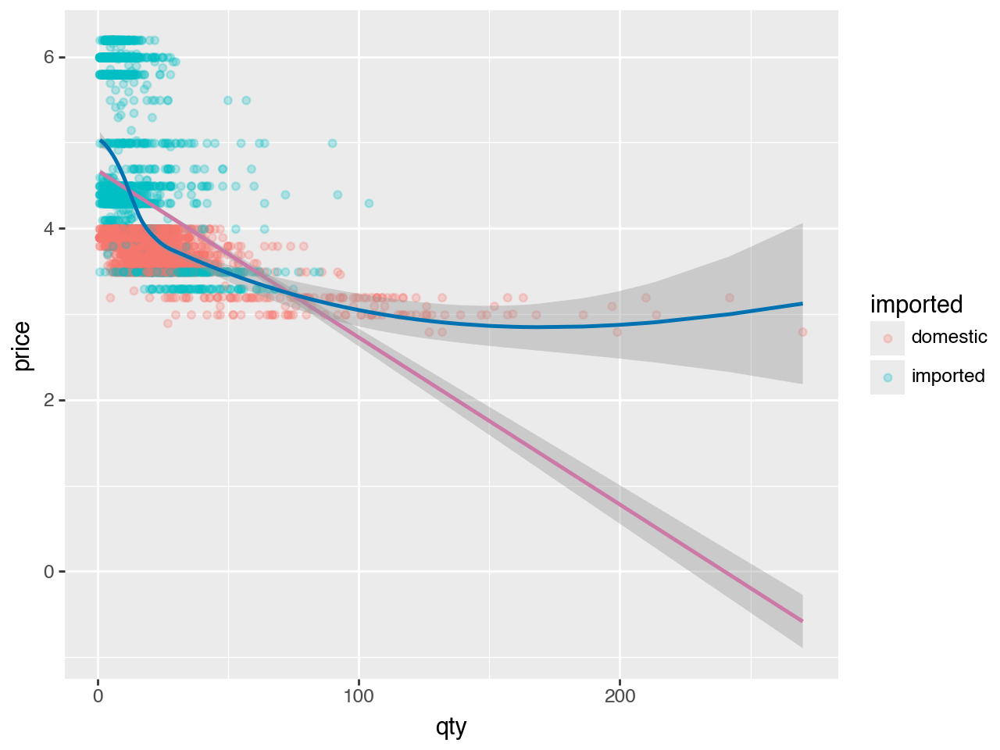
(5) 绘制柱状图 (Bar Plot)¶
在 plotnine 中，柱状图的绘制也需要先准备用来绘制柱状图的数据：
-
例如，如果我们想绘制每个牌子的销量柱状图，我们就需要先对数据进行分组和汇总，得到每个牌子的总销量：
-
大家先简单知道以下代码在做什么就可以了：这里用到了我们在 Class 3.5 中学过的
groupby，作用是按品牌分组，再对每个品牌的销量求和：
beer_summary = (
beer
.groupby("brand", as_index=False)
.agg(sum_qty=("qty", "sum"))
)
print(beer_summary)
brand sum_qty
0 Budweiser 16576
1 Corona 11117
2 Lowenbrau 17560
3 Miller 30998
- 之后，我们使用
ggplot(beer_summary)来创建数据层，以它为基准画柱状图：
ggplot2 (R) vs plotnine (Python) 的区别 - 柱状图： - R：使用
geom_bar(stat = "identity")来告诉 ggplot2 使用原始数据的值（而不是计数），ggplot2也提供了与之等价的geom_col()- Python：plotnine同样提供了更语义化的geom_col()，它等价于geom_bar(stat="identity")，直接用原始数值绘制柱状图，无需额外参数
(
ggplot(beer_summary) +
geom_col( # R: geom_bar(stat = "identity")
aes(y="sum_qty", x="brand"),
fill=OKABE_ITO[1], # R: fill = palette_okabe_ito()[2]
color="black"
) +
scale_y_continuous(labels=lambda l: [f"{int(v):,}" for v in l]) +
labs(
x="Brand",
y="Total Quantity Sold"
) +
theme_bw()
)
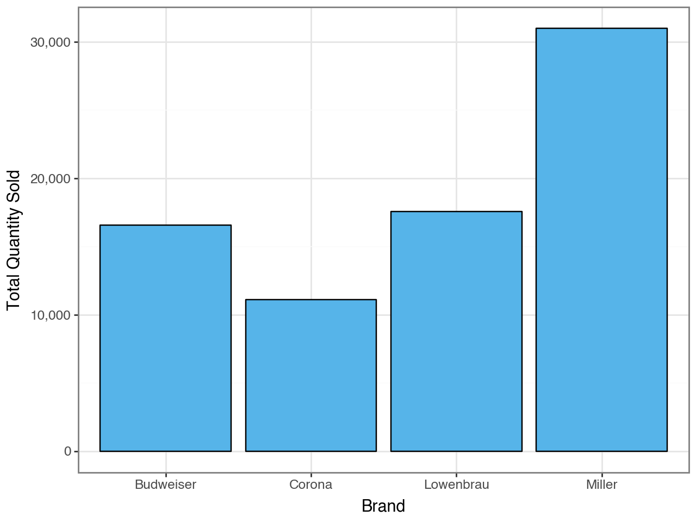
在绘制柱状图的时候，如果想要按照某个顺序来排序柱子，也比较麻烦：
- 大家可以发现，现在默认的柱子排序是按照字典序的，也就是按照品牌名称的字母顺序来排序的
- 如果我们想按照销量的多少来排序柱子，我们就需要把品牌这一列改为类别型（Categorical）
- Pandas 中有一种类别型（Categorical）数据，这种类型的数据是可以指定类别顺序的，因此我们可以把品牌这一列改为类别型，并且指定它的顺序：
ggplot2 (R) vs plotnine (Python) 的区别 - 排序： - R：
reorder(brand, -sum_qty)函数将品牌列转换为因子并按销量降序排列 - Python：将brand列转换为pd.Categorical，并通过sort_values手动指定类别的顺序
# 按照销量降序排序，并转换为有序的 Categorical 类型
brand_order = (
beer_summary
.sort_values("sum_qty", ascending=False)
["brand"]
.tolist()
)
beer_summary["brand"] = pd.Categorical(
beer_summary["brand"],
categories=brand_order,
ordered=True
)
- 之后我们再运行一遍之前的柱状图代码，我们就可以看到柱子已经按照销量的多少来排序了，销量最高的品牌在最左边，销量最低的品牌在最右边了：
(
ggplot(beer_summary) +
geom_col(
aes(y="sum_qty", x="brand"),
fill=OKABE_ITO[1],
color="black"
) +
scale_y_continuous(labels=lambda l: [f"{int(v):,}" for v in l]) +
labs(
x="Brand",
y="Total Quantity Sold"
) +
theme_bw()
)
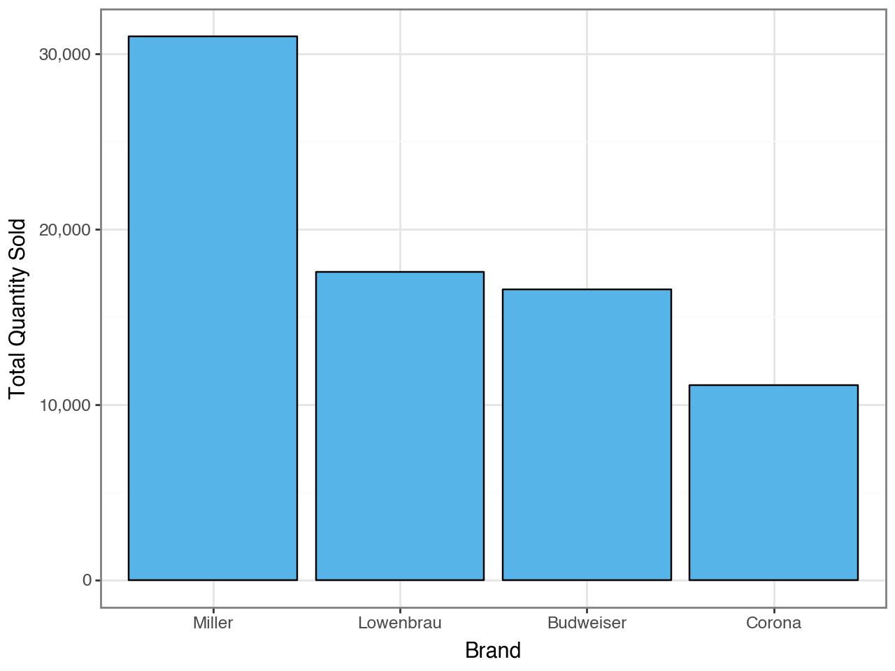
3. 将图像赋值为对象¶
在 Python 中，我们同样可以将整个图像构建的代码赋值为一个对象，这样我们就可以通过这个对象来展示图像了：
-
例如，我们将之前的箱式图的代码赋值为一个对象
p -
注意，赋值操作并不会让图像立即展示出来，我们需要通过调用这个对象
p来展示图像：
p = (
ggplot(beer) +
geom_boxplot(aes(y="price", x="brand", fill="brand")) +
scale_fill_manual(values=OKABE_ITO) # R: scale_fill_okabe_ito()
)
p
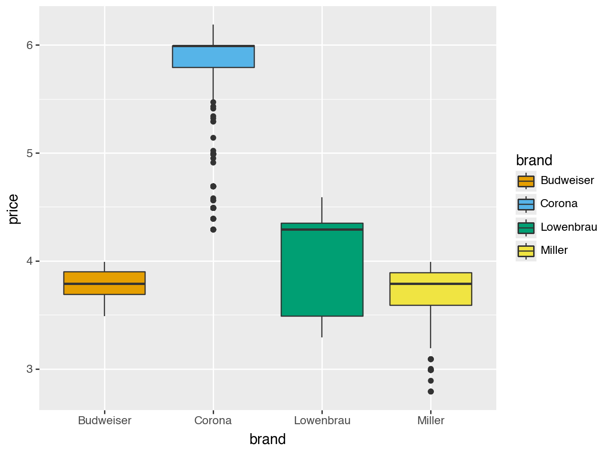
将图像赋值的最大好处就是可以将图像的构建和展示分开，这样我们就可以在构建图像的过程中进行一些调整和修改，而不需要每次都重新运行整个代码来展示图像了：
- 比方说，我们在
p的基础上，先展示一个theme_bw()的版本：
p + theme_bw()
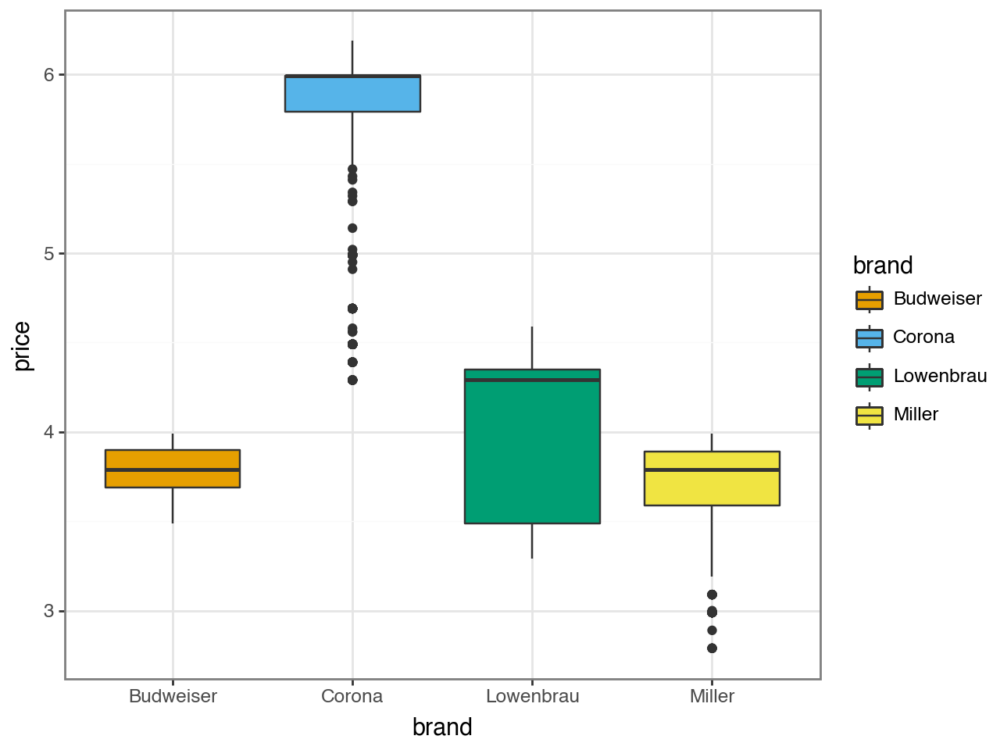
- 然后我们再展示一个
theme_minimal()的版本：
p + theme_minimal()
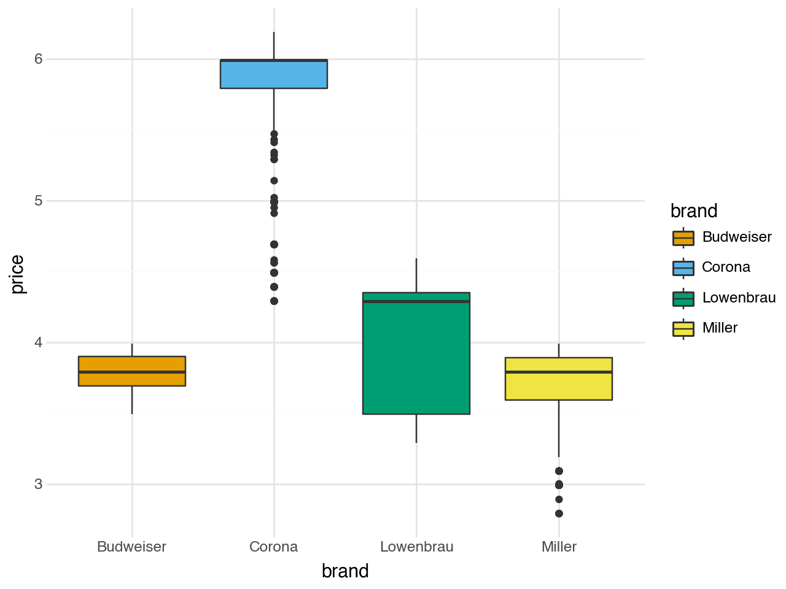
4. Python 中的分图¶
(1) 手动分图¶
在 Python 中，我们可以直接使用 | 和 / 这两个操作符，将多个图形放在一个画布上展示，这和 R 中 patchwork 包的用法几乎是一样的：
patchwork (R) vs plotnine (Python) 的区别 - 多图组合： - R：需要先加载
patchwork包，之后使用|（并列）和/（换行）操作符来组合图形 - Python：plotnine自带了|（并列）和/（换行）操作符（0.15 及以上版本），不需要再额外安装其他的包，用法与 R 中的patchwork基本一致
语法结构如下，以下展示了将6个图像分成2行3列的示例：
(
(图1 | 图2 | 图3) /
(图4 | 图5 | 图6)
)
事实上，手动分图不一定非要行列对齐，我们用 | 来表示并列，用 / 来表示换行，可以根据需要来调整图像的排列方式，例如第一行一张图，第二行两张图：
(
图1 /
(图2 | 图3)
)
例如我们想将散点图和箱形图放在同一行展示，我们就可以这样写：
g1 = (
ggplot(beer) +
geom_point(aes(y="price", x="qty", color="imported")) +
scale_color_manual(values=OKABE_ITO)
)
g2 = (
ggplot(beer) +
geom_boxplot(aes(y="price", x="imported", fill="imported")) +
scale_fill_manual(values=OKABE_ITO) +
theme(legend_position="none")
)
g1 | g2
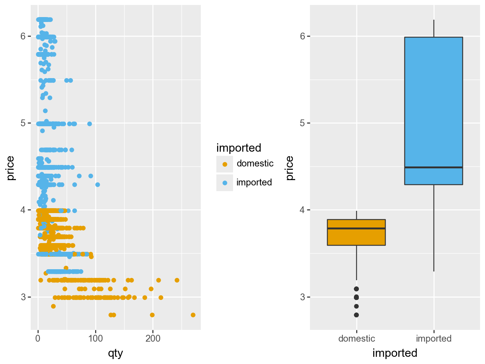
(2) 按要素分图¶
除此之外，我们还可以使用 facet_wrap 函数来按照某个要素来分图：
ggplot2 (R) vs plotnine (Python) 的区别 - facet_wrap 语法： - R：
facet_wrap(~ imported)使用波浪号（~）表示按imported分图 - Python：facet_wrap("imported")直接用字符串表示列名即可，无需波浪号
- 例如我们如果想按照进口和非进口啤酒来分图，我们就可以使用
facet_wrap("imported")来指定按照imported这个变量来分图了 - 运行这段代码后，我们就可以看到两个图像了，一个是进口啤酒的价格分布图，另一个是非进口啤酒的价格分布图了
- 通过这种方式，我们就可以非常方便地按照某个要素来分图了，这也是
plotnine的一个非常重要的功能之一
(
ggplot(beer) +
geom_point(aes(y="price", x="qty", color="imported")) +
facet_wrap("imported") # R: facet_wrap(~ imported)
)
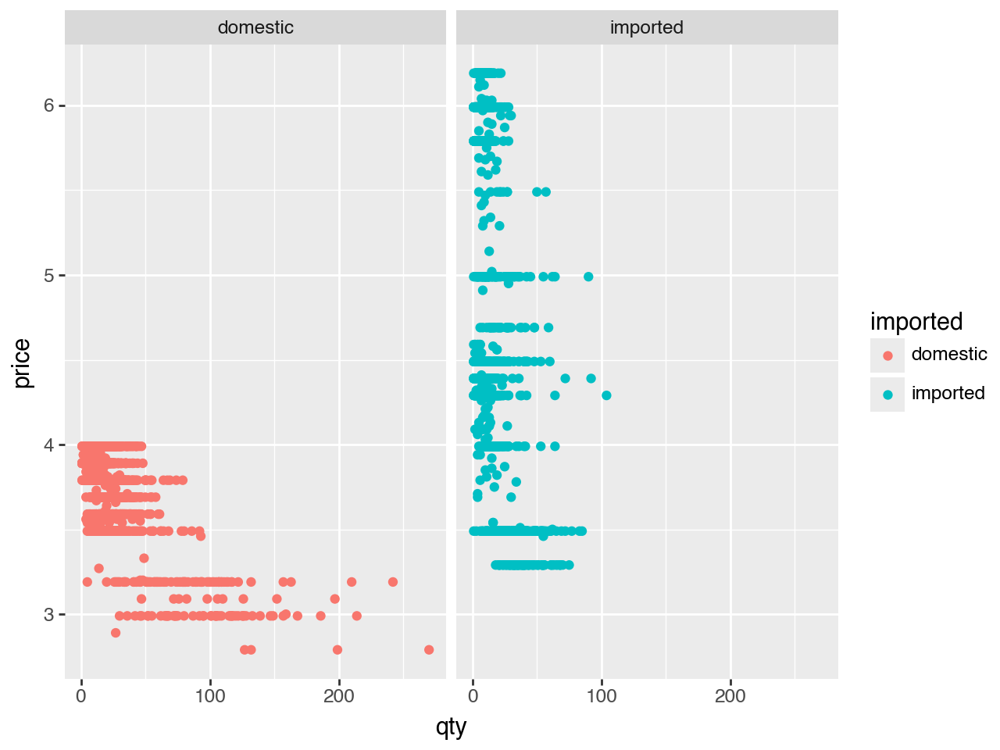